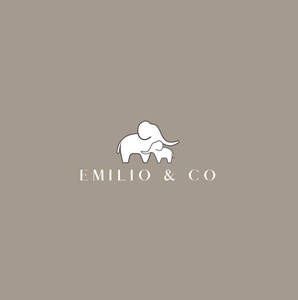

Trade Mark Journal No.2026/005 30 January 2026
UK00004295398 15 November 2025 (24,25,28,35)

- Class 24
- Textile fabrics; Textile fabric; Non-woven textile fabrics; Textiles; Tapestries of textile; Textile fabrics for use in manufacture; Quilts of textile; Textile fabrics for use in the manufacture of sportswear; Non-woven textile fabrics for use as interlinings; Tablemats of textile; Linings [textile]; Waterproof textile fabrics; Rubberized textile fabrics; Textile material; Material (Textile -); Textile fabrics for lingerie; Textile fabrics for the manufacture of clothing; Curtains of textile; Napery of textile; Labels (textile); Labels of textile; Towels of textile; Towels [textile]; Towels [of textile]; Textile goods, and substitutes for textile goods; Banners of textile; Banners textile; Flags of textile; Coated woven textile materials.
- Class 25
- Clothes; Clothing; Swaddling clothes; Baby clothes; Beach clothes; Nappy pants [clothing]; Denims [clothing]; Work clothes; Jackets [clothing]; Shorts [clothing]; Clothes for sports; Drawers as clothing; Drawers [clothing]; Aprons [clothing]; Jackets (Stuff -) [clothing]; Stuff jackets [clothing]; Clothes for sport; Headbands [clothing]; Headbands for clothing; Kerchiefs [clothing]; Bottoms [clothing]; Gloves [clothing]; Gloves as clothing; Capes (clothing); Furs [clothing]; Babies' pants [clothing]; Trunks being clothing; Maternity clothing; Jerseys [clothing]; Layettes [clothing]; Clothing layettes; Clothing for leisure wear; Oilskins [clothing]; Hoods [clothing]; Woolen clothing; Ready-to-wear clothing; Gabardines [clothing]; Garments for protecting clothing; Clothing for babies; Bodies [clothing]; Tops [clothing]; Belts [clothing]; Belts for clothing; Gussets for underwear [parts of clothing]; Playsuits [clothing]; Collars [clothing]; Pockets for clothing; Veils [clothing]; Knitwear [clothing]; Corsets [clothing, foundation garments]; Paper hats for use as clothing items; Silk clothing; Mitts [clothing]; Fabric belts [clothing]; Hats (Paper -) [clothing]; Paper hats [clothing]; Beach clothing; Belts (Money -) [clothing]; Money belts [clothing]; Braces for clothing; Chaps (clothing); Embroidered clothing; Ready-made clothing; Casual clothing; Gussets for bathing suits [parts of clothing]; Knitted clothing.
- Class 28
- Toys; Toys, games, and playthings; Toys and playthings for pets; Ride-on toys; Cuddly toys; Puzzles [toys]; Toys for sandpits; Plush toys; Stuffed toys; Inflatable toys; Toys for babies; Noisemakers [toys]; Toys for pets; Wind-up toys; Fidget toys; Toys for use in perambulators; Plastic toys; Scooters [toys]; Crib toys; Toys for animals; Mobiles [toys]; Toys, games and playthings for pet animals; Windup toys; Rattles [toys]; Toys for cats; Toys for infants; Wooden toys; Toys and playthings for pet animals; Educational toys; Toy playsets; Outdoor toys; Models being toys; Bath toys; Cloth toys; Musical toys; Tricycles for infants [toys]; Toy figurines; Toy furniture; Toys for birds; Mechanical toys; Play mats for use with toy vehicles [playthings]; Wheeled toys; Clockwork toys; Developmental toys; Fluffy toys; Plastic toys for use in the bath; Crib mobiles [toys]; Stuffed animals [toys]; Fabric toys; Plastic models being toys; Model toys; Whack-a-mole toys for pets; Play mats incorporating infant toys [playthings]; Drawing toys; Toy prams; Action toys; Stuffed and plush toys; Stuffed plush toys; Plush stuffed toys; Battery-operated action toys; Sketching toys; Children's toys; Toy bicycles; Squeezable squeaking toys; Smart toys; Clockwork toys [of plastics]; Plastic character toys; Toy tableware; Push toys; Whistling toys; Articles of clothing for toys; Toy wheelbarrows; Squeeze toys; Talking toys; Toy bakeware and toy cookware; Toy mobiles; Bendy balls being toys; Toy animals; Pull toys; Clothing for toy figures; Water-squirting toys; Intelligent toys; Assembly toys; Toy hats; Toy weapons; Novelty toys for parties; Toy glockenspiels; Inflatable pool toys; Costumes being childrens playthings; Toy airplanes; Toy balls; Toy vehicles; Toy pushchairs; Money guns being toys; Puzzle mats [toys]; Playthings; Toy bakeware.
- Class 35
- Business management of wholesale and retail outlets; Retail services in relation to coffee; Retail store services in the field of clothing; Unmanned retail store services relating to food; Online retail store services in relation to clothing; Shop retail services connected with carpets; Retail services in relation to homeware; Retail services in relation to furnishings; Retail services in relation to furniture; Retail services in relation to clothing; Retail services in relation to confectionery; Online retail store services relating to clothing; Online retail services relating to clothing; Retail services in relation to toys; Online retail services relating to handbags; Business management for a trade company and for a service company.
EMILIO & CO GIFTS LTD